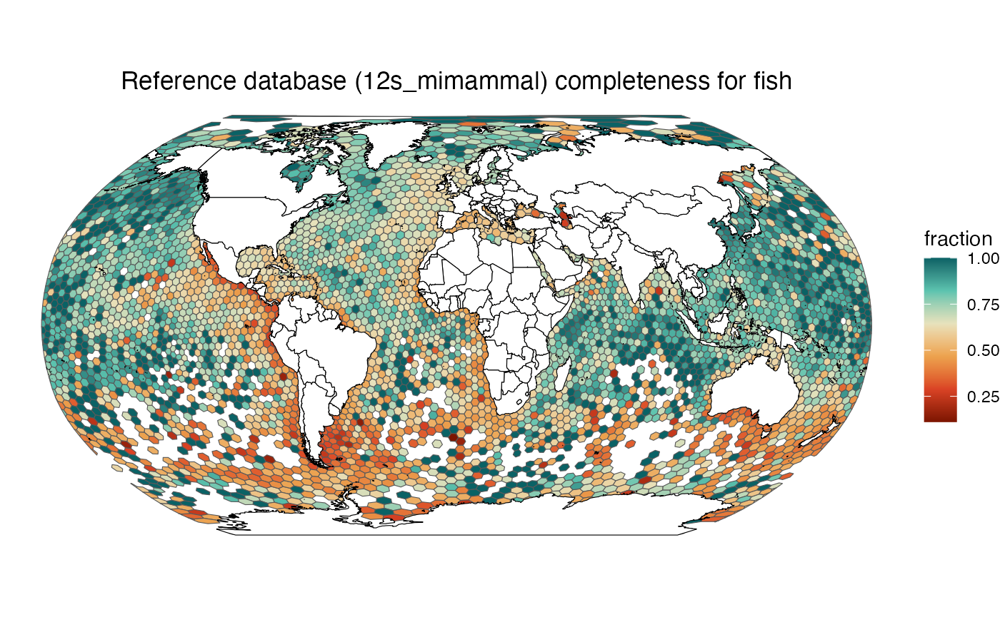
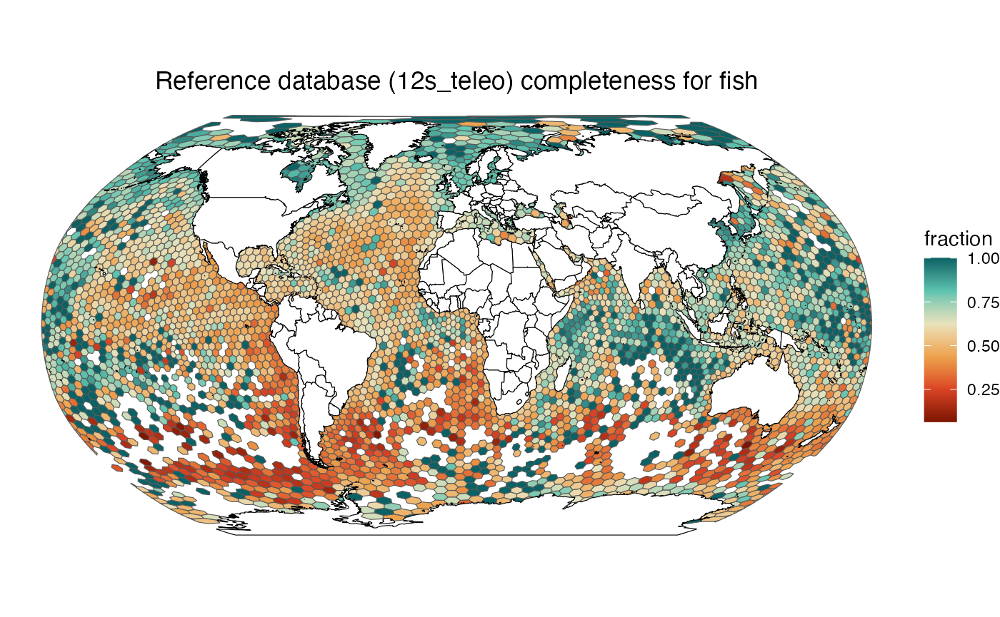
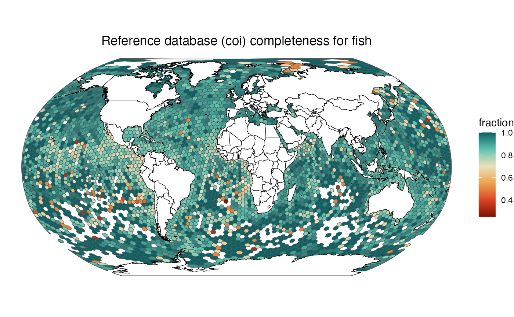
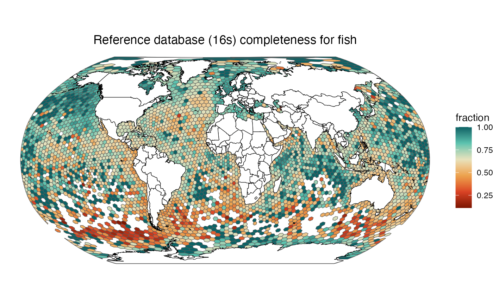

A global gap analysis for the eDNA Expeditions reference databases
global.RmdReference databases
Reference database creation is documented at https://github.com/iobis/eDNA_trial_data, and reference
databases were downloaded to reference_databases from the
LifeWatch server using:
rsync -avrm --partial --progress --include='*/' --include='*pga_tax.tsv' --include='*pga_taxa.tsv' --include='*pga_taxon.tsv' --exclude='*' ubuntu@lfw-ds001-i035.i.lifewatch.dev:/home/ubuntu/data/databases/ ./reference_databases
rm -r ./reference_databases/silva*Species lists
Use the ednagaps package to WoRMS aligned species lists
by marker.
reference_databases_taxa <- list(
"12s_mimammal" = "~/Desktop/temp/reference_databases/12S/202311/12S_mammal_ncbi_1_50000_pcr_pga_taxa.tsv",
"12s_mifish" = "~/Desktop/temp/reference_databases/12S/202311/12S_mito_ncbi_1_50000_mifish_pcr_pga_taxa.tsv",
"12s_teleo" = "~/Desktop/temp/reference_databases/12S/202311/12S_mito_ncbi_1_50000_teleo_pcr_pga_taxa.tsv",
"coi" = "~/Desktop/temp/reference_databases/COI_ncbi/COI_ncbi_1_50000_pcr_pga_taxon.tsv",
"16s" = "~/Desktop/temp/reference_databases/16S/202311/16S_ncbi_euk_1_50000_pga_taxa.tsv"
)
generate_species_lists(reference_databases_taxa)Then read the generated lists and add higher level taxonomic groups:
reference_species <- read_reference_species()
reference_species
#> # A tibble: 114,579 × 11
#> marker phylum class order family genus species isMarine isBrackish
#> <chr> <chr> <chr> <chr> <chr> <chr> <chr> <dbl> <dbl>
#> 1 12s_mimammal Chordata Teleost… Clup… Doros… Ambl… Amblyg… 1 1
#> 2 12s_mimammal Chordata Teleost… Clup… Dussu… Duss… Dussum… 1 0
#> 3 12s_mimammal Chordata Teleost… Clup… Prist… Opis… Opisth… 1 1
#> 4 12s_mimammal Chordata Teleost… Perc… Trigl… Chel… Chelid… 1 1
#> 5 12s_mimammal Chordata Elasmob… Squa… Squat… Squa… Squati… 1 1
#> 6 12s_mimammal Chordata Teleost… Perc… Cotti… Cott… Cottus… 1 1
#> 7 12s_mimammal Chordata Teleost… Perc… Cotti… Cott… Cottus… 0 0
#> 8 12s_mimammal Chordata Teleost… Silu… Silur… Kryp… Krypto… 0 0
#> 9 12s_mimammal Chordata Teleost… Char… Bryco… Bryc… Brycon… 0 0
#> 10 12s_mimammal Chordata Teleost… Char… Anost… Mega… Megale… 0 0
#> # ℹ 114,569 more rows
#> # ℹ 2 more variables: isFreshwater <dbl>, isTerrestrial <dbl>Occurrence data
H3 gridded occurrence data is read from a custom SQLite database:
library(DBI)
con <- dbConnect(RSQLite::SQLite(), "~/Desktop/protectedseas/database.sqlite")
res <- dbSendQuery(con, "
select phylum, class, \"order\", species, h3.h3_2 as h3 from occurrence
left join species on species.scientificname = occurrence.species
left join h3 on occurrence.h3 = h3.h3_7
where phylum is not null
group by phylum, class, \"order\", species, h3.h3_2
")
gridded_occurrences <- dbFetch(res) %>%
add_groups() %>%
as_tibble()
dbClearResult(res)
dbDisconnect(con)
gridded_occurrences
#> # A tibble: 2,855,810 × 6
#> phylum class order species h3 group
#> <chr> <chr> <chr> <chr> <chr> <chr>
#> 1 Acanthocephala Eoacanthocephala Gyracanthocephala Acanthogyrus … 8297… NA
#> 2 Acanthocephala Eoacanthocephala Gyracanthocephala Pallisentis (… 823d… NA
#> 3 Acanthocephala Eoacanthocephala Neoechinorhynchida Atactorhynchu… 822b… NA
#> 4 Acanthocephala Eoacanthocephala Neoechinorhynchida Atactorhynchu… 8244… NA
#> 5 Acanthocephala Eoacanthocephala Neoechinorhynchida Atactorhynchu… 8244… NA
#> 6 Acanthocephala Eoacanthocephala Neoechinorhynchida Atactorhynchu… 8244… NA
#> 7 Acanthocephala Eoacanthocephala Neoechinorhynchida Atactorhynchu… 8244… NA
#> 8 Acanthocephala Eoacanthocephala Neoechinorhynchida Atactorhynchu… 8244… NA
#> 9 Acanthocephala Eoacanthocephala Neoechinorhynchida Atactorhynchu… 8244… NA
#> 10 Acanthocephala Eoacanthocephala Neoechinorhynchida Atactorhynchu… 8245… NA
#> # ℹ 2,855,800 more rowsAnalysis
Join the gridded occurrences with the reference species lists and calculate completeness by group and cell:
grid_markers <- gridded_occurrences %>%
select(h3, species, group) %>%
left_join(reference_species %>% select(marker, species), by = "species") %>%
group_by(h3, group) %>%
mutate(
group_species = n_distinct(species),
group_species_in_reference = n_distinct(species[!is.na(marker)])
) %>%
group_by(h3, group, group_species, group_species_in_reference, marker) %>%
summarize(
group_marker_species = n_distinct(species)
) %>%
ungroup()
grid_markers %>% filter(group == "fish" & h3 == "82000ffffffffff")
#> # A tibble: 6 × 6
#> h3 group group_species group_species_in_ref…¹ marker group_marker_species
#> <chr> <chr> <int> <int> <chr> <int>
#> 1 82000f… fish 44 39 12s_m… 32
#> 2 82000f… fish 44 39 12s_m… 32
#> 3 82000f… fish 44 39 12s_t… 32
#> 4 82000f… fish 44 39 16s 31
#> 5 82000f… fish 44 39 coi 37
#> 6 82000f… fish 44 39 NA 5
#> # ℹ abbreviated name: ¹group_species_in_referenceCreate maps:
library(sf)
library(leaflet)
library(ggplot2)
library(glue)
land <- rnaturalearth::ne_countries(scale = "medium", returnclass = "sf")
make_map <- function(selected_group, selected_marker) {
map_grid <- grid_markers %>%
filter(group == selected_group & marker == selected_marker) %>%
mutate(fraction = group_marker_species / group_species) %>%
select(h3, group_species, group_marker_species, fraction) %>%
mutate(geometry = h3jsr::cell_to_polygon(h3)) %>%
st_as_sf() %>%
st_wrap_dateline(options = c("WRAPDATELINE=YES", "DATELINEOFFSET=180"))
ggplot() +
geom_sf(data = map_grid, aes(fill = fraction)) +
geom_sf(data = land, fill = "white", color = "black") +
scale_fill_gradientn(colours = c("#7d1500", "#da4325", "#eca24e", "#e7e2bc", "#5cc3af", "#0a6265"), values = seq(0, 1, 0.2)) +
coord_sf(crs = st_crs("+proj=robin +lon_0=0 +x_0=0 +y_0=0 +ellps=WGS84 +datum=WGS84 +units=m +no_defs")) +
ggtitle(glue("Reference database ({selected_marker}) completeness for {selected_group}")) +
theme_void() +
theme(plot.title = element_text(hjust = 0.5))
}
make_map("fish", "12s_mifish")
make_map("fish", "12s_mimammal")
make_map("fish", "12s_teleo")
make_map("fish", "coi")
make_map("fish", "16s")